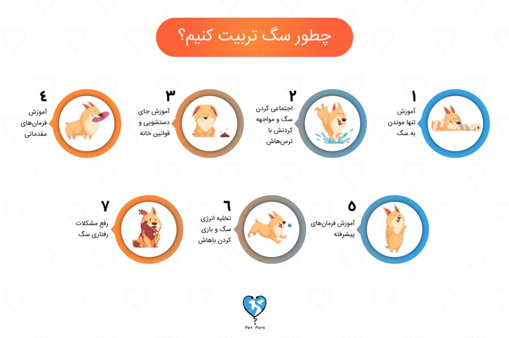
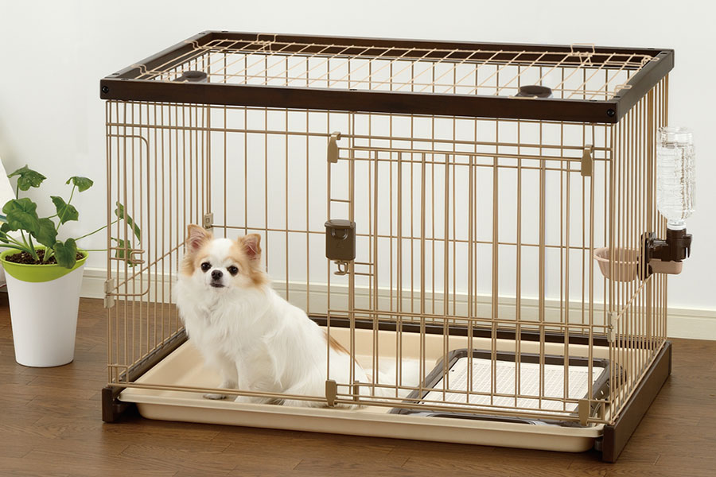
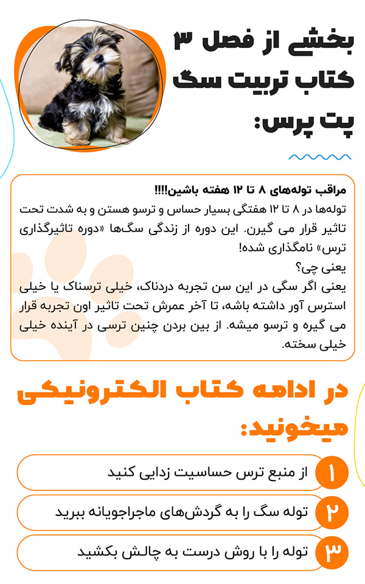
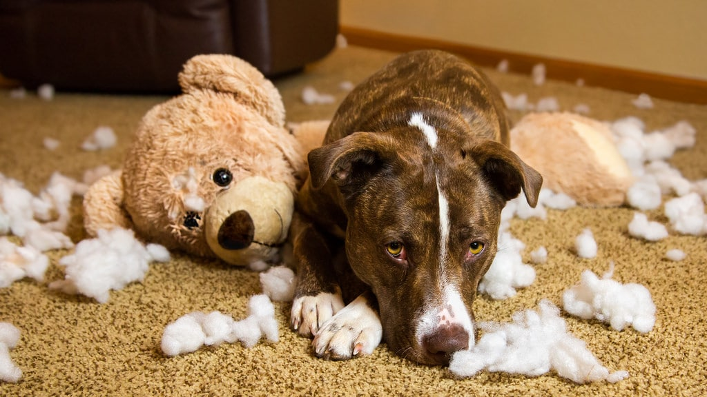
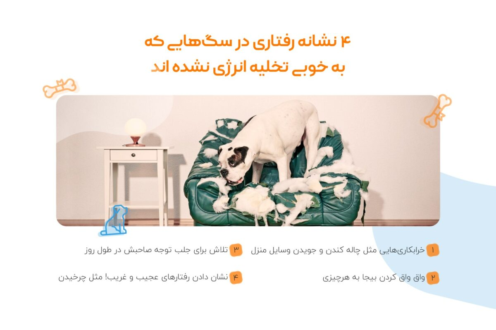
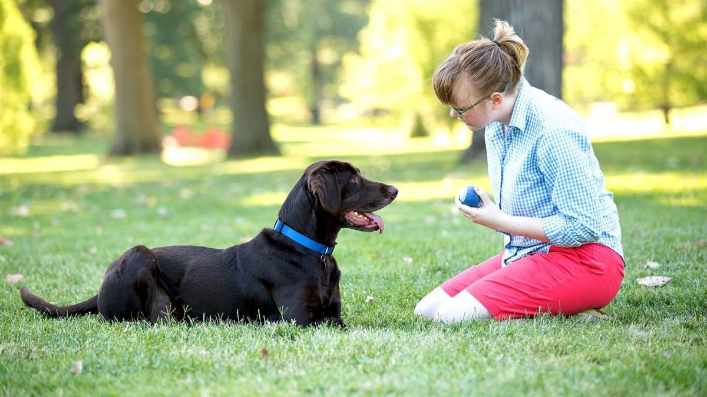
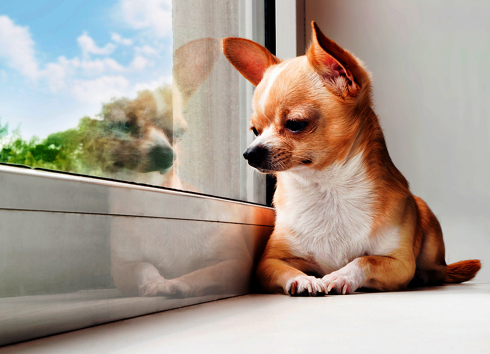
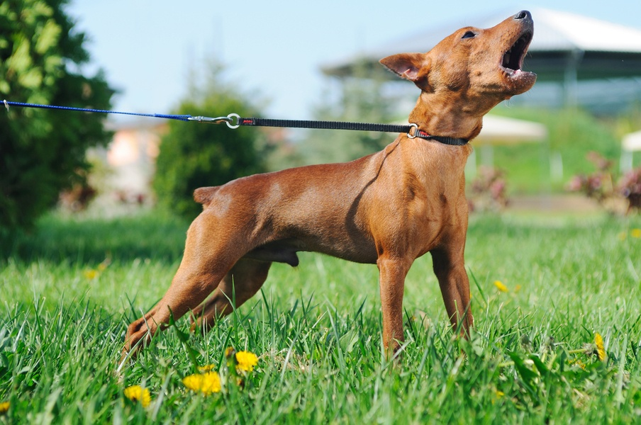

تربیت سگ یکی از سخت ترین کارهای دنیاس! میگید چرا؟ چون کوچک ترین رفتار و اشتباه شما میتونه باعث بدرفتار شدن سگتون بشه. برای آموزش سگ به شیوه درست باید بدونین چه موقع، کجا، چه رفتاری رو چه جوری انجام بدید که سگ ببینه و ازش یاد بگیره. پس حالا که تعلیم سگ سخته باید به محض ورود سگ به خونه و حتی قبلش برای این کار خودمون رو آماده کنیم. یعنی فیلم آموزشی ببینیم، دربارش بخونیم و اطلاعاتمون رو بالا ببریم.
در این مقاله میخوایم درباره تربیت سگ و اهمیتش براتون صحبت کنیم و بعد ببینیم از کجا شروع کنیم و برای درست و اصولی تربیت کردن سگمون چه کارهایی انجام بدیم.

تربیت سگ چیه و چرا مهمه؟
- تعلیم سگ یعنی آموزش دادن به سگ برای انجام کارهایی که برای ما مطلوبه و انجام ندادن کارهایی که برای ما نامطلوبه. مثلا پارس کردن سگ ساعت ۲ نصفه شب وقتی همسایه ها خوابن، از نظر یه سگ اشکالی نداره ولی از نظر ما اینطور نیست. این که به سگ یاد بدیم این کار نامطلوبه ، میشه تربیت سگ.
- تربیت و آموزش سگ یک مهارته که نیاز به مطالعه و به دست آوردن اطلاعات داره.
- به جرئت میتونم بگم سخت ترین و پیچیده ترین وطیفه یه صاحب سگ، تربیت کردن اون به نحو درسته.
- موقع تربیت سگ، تک تک حرکات شما به عنوان صاحب سگ و کسی که سگ برای انتخاب رفتار در آینده بهش نگاه میکنه، مهم هستن.
- از طرف دیگه، تربیت سگ در ماه های اول زندگی اش تا حدود ۸ ماهگی بسیار اساسی و کلیدی هست و اگر این دوران مهم بگذره و شخصیت سگ شما شکل بگیره، تربیت کردن این کوچولوهای باهوش بسیار بسیار سخت میشه.
اگر سگ رو تربیت نکنیم چی میشه؟
- اگر دونستن نحوه درست نگهداری از سگ برای زنده و سالم موندن دوست کوچولوی شما ضروری باشه، تربیت سگ تعیین کننده کیفیت زندگی سگ با شما که صاحبش باشید است.
- این یعنی اینکه زندگی با سگی که تربیت نشده و هرکاری دلش میخواد انجام میده، سخت و طاقت فرسا است.
- برای مثال، سگی که خوب تربیت نشده و آموزش ندیده ممکنه به آدم ها و حیوانات دیگه واق واق کنه ، به غریبه ها دندون نشون بده و گاز بگیره، جاهایی که نباید دستشویی کنه، وسایل خونه رو تخریب کنه، مدفوعش رو بخوره و خیلی کارهای دیگه ای انجام بده که باعث نارضایتی شما و افرادی که باهاش زندگی میکنن بشه.
- پس زندگی در کنار یه سگ تربیت شده، لذت بخش و باکیفیته و زندگی با یه سگ تربیت نشده، انرژی گیره و تجربه بدی رو براتون رقم میزنه.

تربیت سگ از چند ماهگی شروع میشود؟
بهترین موقع برای شروع تربیت و آموزش سگ، ۲ ماهگی هست.
با ما در ادامه مقاله کامل همراه باشید تا بهتون بگیم که برای آموزش و تربیت کردن سگ به شکل اصولی باید از کجا شروع کنیم و چه کارهایی انجام بدیم.
بهترین روش تربیت سگ چیست؟
به گفته سایت WebMD که یکی از معتبرترین سایت های حوزه حیوانات خانگی است، بهترین روش تربیت سگ در جدیدترین یافته های دامپزشکان و متخصصان رفتارشناسی سگ ها در سراسر دنیا، روش تاییدیه مثبت است. پایه این روش روی تشویق کردن کارهای خوب و مورد پسند سگ و نادیده گرفتن کارهای بد و ناپسند بنا شده.
البته اینکه چطور کارهای بد رو ندیده بگیرید و کارهای مثبت رو چه موقع و چگونه تشویق کنید، مساله ایه که باید در موردش بیشتر بهتون بگیم.
چگونه سگ را تربیت کنیم؟
از همون لحظه ای که سگ رو به خونه میارید، باید تربیتش رو شروع کنید.
سگ ها با روش آزمون و خطا یاد میگیرن. یعنی وقتی کاری انجام میدن و به هدفشون میرسن یا تجربه خوبی توی ذهنشون باقی میمونه، انجام اون کار رو ادامه میدن و برعکس.
برای همین تک تک حرکات سگ رو از روز اول زیر نظر داشته باشید، حرکات خوب رو با دادن تشویقی، تشویق کرده و کارهای ناپسند رو با نادیده گرفتن و پرت کردن حواسش، متوقف کنید. شما با این روش میتونید بهش یاد بدید که چه کاری خوبه و چه کاری بده.
با استفاده از تشویقی میتونید سگتون رو برای آموزش آماده کنید. شما برای آموزش نه گفتن به سگ؛ باید از تشویقی استفاده کنید تا به سگتون یاد بدید چه کارهایی ممنوعه. این کار به خصوص برای توله سگی که به تازگی به سرپرستی گرفتید خیلی حیاتی هست. آموزش نه گفتن به سگ یکی از آموزشهایی هست که برای تربیت توله سگ لازمه؛ چون شما با این کار بهش یاد میدید که کی رئیسه و اینکه قوانین خونه چیه.
پس از در نظر گرفتن این موضوع و رعایتش حالا موقع اینه که آموزش دادن به سگ رو به صورت جدی شروع کنید. برای این کار قدم به قدم پیش برید.
اولین آموزش توله سگ: تربیت توله سگ برای تنها موندن بدون اینکه ناله کنه یا زوزه بکشه
اولین آموزشی که باید به یه توله سگ بدید نحوه تنها موندنه.
یکی از مهم ترین مشکلات کسانی که تازه سگ میخرن (بخصوص در شب های اول) مشکل سروصدا، گریه کردن، زوزه کشیدن و واق واق کردن توله سگ هست که خواب و خوراک رو ازشون میگیره و همون روزهای اول صاحبش رو از خرید سگ پشیمون میکنه.
خیلی ها فکر میکنن این رفتار توله سگ غیر عادیه و مشکلی براش به وجود اومده.
در صورتی که ناله، زوره کشیدن، گریه کردن و واق واق توله سگ دلیل داره و رفتاری کاملا طبیعی و قابل پیش بینی هست!
دلیل این رفتار چیه؟ ما باید در برابر این رفتار چه عکس العملی نشون بدیم و چطوری توله رو آروم کنیم و آرام نگه داریم تا بتونیم شب خوب بخوابیم؟
وله سگ ها به صورت غریزی وقتی تنها میمونن، شروع به سروصدا و زوزه کشیدن، پارس کردن و صدا کردن صاحبشون میکنن و اینکه چه پاسخی از طرف شما دریافت کنن، روی رفتارشون در آینده تاثیر مهمی میذاره.
به طور کلی، کاری که ما میتونیم انجام بدیم این هاست:
- به توله سگ اطمینان بدیم که جاش امنه و هیچ خطری تهدیدش نمیکنه
- کم کم به تنها موندن عادتش بدیم
- بهش آموزش بدیم تنها بمونه و سروصدا نکنه (این بخش باعث میشه حتی وقتی شما خونه نیستین، سگ آرام باشه و از مشکلات مهمی مثل اضطراب جدایی پیشگیری میکنه)
چطوری این ۳ مورد رو به سگ یاد بدیم؟ خب توضیحش طولانی و از حوصله متن خارجه برای همین ارجاعتون میدیم به کتاب جامع آموزش به سگ که این مورد و تمامی موارد دیگه تربیتی رو شامل میشه:
برای آموزش سگ به شیوه درست باید بدونین چه موقع، کجا، چه رفتاری رو چه جوری بروز بدید که سگ ببینه و ازش یاد بگیره. این ایبوک قدم به قدم و کاربردی به شما یاد میده از روز اول با سگ چه جوری رفتار کنین و چه چیزهایی رو یادش بدید و کمک میکنه یه سگ با تربیت و خوش رفتار تحویل جامعه بدید 


کتاب خوندن رو دوست ندارین؟؟؟
دوره آموزشی رو چطور؟
تربیت درست سگتون رو با دیدن دوره تربیت سگ رویایی پت پرس یاد بگیرین.
توی این دوره کلی فیلم از فضای واقعی تربیت و چالشهای آموزش سگ میبینید که این موارد همراه با توضیح تمامی مباحث تربیت سگ توسط یه مربی حرفهای خواهد بود. به علاوه امکان این رو دارید که با مربی جلسات خصوصی و آنلاین داشته باشید تا سوالاتتون رو بپرسید. بعد از دیدن آموزشها، تکالیف تعیین شده رو انجام میدین و برای مربی ارسال میکنین تا مشکلات و ایراد کارتون رو متوجه بشین!
از اطلاعات پراکنده و بدون پیوستگی، آموزش هایی که در واقعیت نتیجه ندارن و تمرینهایی که در مورد تربیت سگت جواب نمیدن، خسته شدی؟🙁 ما همه این مشکلات رو حل کردیم تا بتونی یک بار برای همیشه یه سگ رویایی تربیت کنی. همراه یک مربی باتجربه و ایرانی به سفری برو که در اون با چالشهای واقعی تربیت سگ رو به رو میشی، حل کردنشون رو یاد میگیری و نتیجه تمریناتت رو میفرستی تا فیدبک بگیری. تربیت سگ راحته، اگر با پت پرس باشه!😎
نمونه فیلم دوره تربیت سگ که مربوط به یکی از بخشهای فصل هفتم این دوره هست رو هم پیشنهاد میکنم حتما ببینین:
دومین آموزش در تربیت سگ: اجتماعی کردن سگ و مواجه کردنش با ترس هاش!
یکی از ویژگی های خیلی مهم سگ های تربیت شده خوش اخلاق و با اعتماد به نفس بودن اون هاست.
سگی که شجاعه از مواردی مثل صداهای بلند، تنها ماندن، غریبه ها، دامپزشک، سگ های دیگه و حیوانات نمیترسه، بهشون پارس نمیکنه و علیه اون ها دست به خشونت نمیزنه بلکه در برابرشون کاملا هوشیاره و رفتار مناسب و عاقلانه رو نشون میده. این نوع سگ به صاحبش اعتماد و اطمینان کافی داره. زندگی با سگی که به راحتی میترسه و شروع به لرزیدن، واق واق کردن، دندان نشان دادن و غرغر کردن میکنه، بسیار سخته و نمیشه اون رو از خانه بیرون برد، تنها گذاشت یا در حضورش مهمان داری کرد!
مخالف سگ خوش برخورد سگیه که به افراد یا سگ هایی که توسط صاحبش بهش معرفی میشن اعتماد نداره، بهشون واق واق، غرش یا پرخاش میکنه یا میترسه.
سگ خوش برخورد در مواجهه با افراد جدید یا سگ های دیگه، پارس نمیکنه یا در صورت شنیدن دستور صاحبش به سرعت ساکت میشه.

چطور سگم رو اجتماعی کنم؟
توله ها باید در سن کم به چالش کشیده بشن، از تولگی به نحوه درست با صداهای بلند، موقعیت های استرس آور، غریبه ها، حیوانات دیگه و …مواجه بشن تا در برگسالی به مشکلی برنخورن.
این کار مهم ترین قسمت تعلیم سگ در سن پایین هست. سگی که یاد گرفته در سن پایین نسبت به سگ های دیگه، صداهای بلند، آدم های غریبه و …. چطوری واکنش نشون بده، در بزرگسالی وقتی باهاشون مواجه میشه، به مشکل برنمیخوره. به این کار به اصطلاح میگن “اجتماعی کردن سگ“
یادتون باشه تا ۶ ماهگی سگ بیشتر برای اجتماعی کردن سگ وقت ندارید. اگر سگتون بالای ۶ ماه داره و از مشکلات تربیتی اش رنج میبرید باید برید سراغ رفع اون ها.
اینکه چطور سگ رو به چالش بکشید و اجتماعی اش کنید، موضوع مفصلیه که در ایبوک راهنمای جامع تربیت سگ که بالاتر دربارش صحبت کردیم، توضیح دادیم.

واضحه که اگر وقت کتاب خوندن ندارید و ترجیح میدید به جاش فیلم تماشا کنید همه این موارد رو یه مربی باتجربه به صورت تصویری بهتون آموزش داده و میتونین فیلمش رو (لینکش بالاتر هست) دانلود و تماشا کنید.

حالا نوبتی هم باشه نوبت آموزش جای دستشویی و قوانین خونه به سگه، آموزش سوم!
حالا که به سگتون یاد دادید که تنها بمونه و همزمان که دارید موارد دومین آموزش رو هم کم کم باهاش کار میکنید، باید آموزش دستشویی سگ (ادرار و مدفوع) و آموزش پیروی از قوانین خانه رو هم شروع کنید، اما لازمه قبلش بدونید که اصلا چه قوانینی برای سگ باید وضع کنید!
اگر میخواید تجربه شیرین نگهداری از سگ براتون خراب نشه نباید مهمترین چیز رو فراموش کنین و اون هم اینکه اگه سگتون به حال خودش رها بشه هرجور دلش میخواد رفتار میکنه و این با چیزی که شما از یه سگ خوش رفتار انتظار دارید منطبق نیست. پس باید تعلیم سگ در این زمینه رو جدی بگیرین!
برای همین عضو جدید و کوچیک خانواده تون لازمه که بفهمه چه کارهایی ازش انتظار میره و قابل قبوله.
به همین خاطر باید قوانین مشخصی برای خونه وجود داشته باشه، سگ یه برنامه روزانه داشته باشه و همه افراد خانواده صددر صد بهش پایبد باشن. در این صورت میبینین چقدر سریع توله تون خودش رو با شرایط زندگیتون سازگار میکنه.
اجرای قوانین و یه برنامه منظم از همون اول که توله سگ رو به خونه میارین، رفتارهای خوب رو بهش یاد میده و باعث میشه بقیه افراد هم بدونن چه مسئولیتی دارن و باید چطوری باهاش رفتار کنن.
نتیجه همه این کارها داشتن سگی خوش رفتار و مودبه که زندگی کردن کنارش لذتبخشه و نباید همیشه استرس داشته باشین که با خرابکاریش روبرو میشین، موهاش رو جایی که نباید پیدا می کنین، روی کاناپه ادرار کرده، فقط غذاهای خاصی رو میخوره و … و مهمتر از همه هر لحظه ممکنه کاری کنه که به خودش و یا یکی دیگه از اعضا خانواده مخصوصا بچه تون آسیب برسونه.

قوانین خانه شامل چه چیزهایی میشن؟
۱۲ تا قانون خیلی مهم وجود دارن که سگ باید اونا رو متوجه بشه. برای مثال فهمیدن اینکه چه جاهایی از خونه هستن که اجازه نداره بره یا اینکه جای خوابش کجاست.
غذا ندادن به سگ از سر میز و اسباب و اثاثیه ای که نباید روشون بشینه یا بپره و … هم جزو این قوانین هستن.
برنامه ریزی برای سگ چه اهمیتی در تربیت سگ داره؟
علاوه بر وضع قوانین، باید برای سگتون یه برنامه روزانه (حتی غیر دقیق) وضع کرده و عادتش بدید. چرا؟
برنامه ریزی برای زندگی سگ و پایبند بودن بهش ۴ تا مزیت مهم داره:
- توله سگ از همون سن کم میفهمه رئیس کیه! متوجه میشه شمایید که صاحبش هستید و شما تعیین میکنید چه موقع چه کاری انجام بده (کی بخوابه، کی غذا بخوره و …) برای همین ازتون حساب میبره و به حرف شما گوش میده، هر کار دلش خواست توی خونه انجام نمیده.
- سگ خیالش راحت میشه که سر ساعت غذاش آماده است، برای دستشویی مشکلی نداره و به بازی و خوابش هم میرسه. این از استرس توله سگ کم میکنه.
- از بسیاری از مشکلات رفتاری مثل خشونت نشون دادن، دستشویی کردن داخل خانه، بدغذا شدن سگ و …. پیشگیری میشه.
- برای شما که صاحب سگ هستید هم آرامش خاطر به همراه داره چون میدونین کی باید منتظر چه چیزی باشید.
پس برنامه داشتن رو فراموش نکنید!

یاد دادن جای ادرار و مدفوع به سگ
برای یاد دادن دفع ادرار و مدفوع در جای مناسب سگتون باید یاد بگیره کی و کجا دفع کنه لازمه از همون اول ورودش یعنی وقتی یه توله کوچیکه اقدام به آموزش سگ کنین.
تازه وقتی راهی برای تربیتش پیدا می کنین با کلی حادثه ناخواسته روبرو میشین، بهتره بدونین این یه مساله طبیعیه.
ضمن تربیت لازمه صبور و آروم باشین و روی مراحل آموزشتون پافشاری کنین. یادتون باشه سرعت یادگیری توله ها باهم فرق می کنه.
در بیشتر نژادها از حدود ۸ هفتگی توله توانایی کنترل مثانه پیدا می کنه پس بسرعت شروع به آموزش کنین ولی در ابتدای کار توقع زیادی نداشته باشین.
۲ نوع روش کلی برای آموزش سگ برای جای دستشویی وجود دارن :
- آموزش جای دفع ادرار و مدفوع در بیرون از خانه
- آموزش جای دفع ادرار و مدفوع در داخل خانه
برای یاد گرفتن دقیق این آموزشها، پیشنهاد میکنم مقاله آموزش دستشویی سگ رو حتما مطالعه کنین.
چهارمین آموزش: نوبت تربیت سگ برای گوش دادن به فرمان شما فرا رسیده!
اگر ۳ قسمت قبل رو کامل روی سگتون اعمال کرده باشین، حالا خیالتون راحته که بستر خوبی رو برای داشتن یه سگ حرف گوش کن و خوش رفتار فراهم کردین.
پس نوبت یاد دادن یه سری فرامین و آموزش راه رفتن با قلاده به سگه.
بعضی افراد ترجیح میدن برای آموزش فرامین مقدماتی به یه مربی سگ خوب و کارکشته اعتماد کنن. این کار شاید راحت تر باشه ولی خب هزینه زیادی داره و از لذت آموزش و تربیت سگ هم محرومتون میکنه!

چگونه به سگ فرمان ها رو آموزش بدیم؟
با برقرار کردن جلسات آموزشی.
سگ ها رو موقع آموزش دادن باید مثل یک بچه ۲ ساله تصور کنید! قطعا نمیشه یه بچه ۲ ساله رو ۲ ساعت نشوند و بهش ریاضی درس داد! توانایی یادگیری یه بچه ۲ ساله نهایتا گفتن ۱،۲ هست و اگه بیشتر از ۱۰ دقیقه یه چیزو براش تکرار کنین خسته شده و حواسش به راحتی پرت میشه.
سگ ها نهایت میتونن ۱۰ دقیقه روی یادگیری فرمان ها تمرکز کنن و جلسات آموزشیشون باید سرگرم کننده و پر از تشویق و تفریح باشه وگرنه خسته میشن و شما رو هم خسته میکنن.
یادتون باشه که:
آموزش و تربیت سگ نیازمند زمان هست.
نژادهای مختلف سگ قدرت یادگیری متفاوتی دارن ولی حتی کم هوش ترین و لجبازترین سگ ها هم با تکرار و تشویق یاد میگیرن. اگه سگتون یاد نمیگیره و هیچ پیشرفتی نمیکنه، آموزش دادن شما مشکل داره نه یادگیری سگ شما!
فرقی نمیکنه سگ شما بالغ باشه یا توله، یاد دادن فرمان های مقدماتی برای همه سنین سگ ها الزامیه.
چه فرمان هایی رو به سگ آموزش بدیم؟
یه سری فرمان ها هستن که یادگیریشون برای هر سگی ضروریه. فرقی نداره سگ شما یک سگ آپارتمانی، عروسکی و یا بهترین سگ نگهبان باشه. باید این فرمانها رو حتما بهش یاد بدید:
- بشین
- بیا
- بمون
- پایین
- اسم سگ
- آموزش نخور
- بنداز
- بردار
- بیار
یاد دادن همه این فرمان ها به سگ شاید ۱ سال زمان ببره، ولی این چیز بدی نیست. از بشین شروع کنید و اونقدر باهاش تمرینش کنید که کامل ملکه ذهنش بشه و براش جا بیفته.
همه جا ازش بخواید بشینه و بهش تشویقی بدید، تو خونه، بیرون، پارک، مهمونی، خیابون، موقع غذا، با قلاده و بی قلاده و …. بعد برید سراغ یاد دادن فرمان بعدی.

چطور این فرمان ها رو به سگ یاد بدیم؟
خب هر فرمان نحوه یاد دادن خودش رو داره. میتونین با مطالعه کتاب الکترونیکی تربیت سگ نحوه یاد دادن همه این فرامین به همراه چند فرمان دیگه رو یاد بگیرید و قدم به قدم با سگتون تمرین کنید.
بازم اگر توی خرید و مطالعه این کتاب ها شک دارید با سر زدن به صفحشون میتونین نسخه رایگانشون رو دانلود و بعد اقدام به خرید و مطالعشون کنید.
یادتون باشه آموزش فرمان ها به سگ رو تا جایی که میتونید طول بدید! چرا؟
سگ هایی که آموزش دیدنشون ادامه پیدا میکنه از نظر ذهنی فعال میمونن که این باعث میشه سمت رفتارهای مخرب نرن. سگ اینطوری در هر مرحله زندگی فرمان های جدیدی که در ادامه فرمان های قبلی هستن رو یاد میگیره و فرمان های قبلی در ذهنش تثبیت میشن. یاد دادن فرمان های جدید به سگی که زود یاد میگیره و بهشون عمل میکنه، برای خود شما که صاحبش هستید هم لذت بخش و جذابه.

پنجمین آموزش:تربیت سگ در حین بازی کردن و تخلیه انرژی
چیزی که همه ما می دونیم اینه که سگ ها عاااشق بازی کردن هستن و این بازی کردن با سگ خیلی هم لذتبخشه ولی چیزی که اغلب نمیدونیم اینکه چقدر بازی کردن روی جسم، ذهن، رفتار، توانایی اجتماعی و شناختی سگمون تاثیر میذاره و در واقع برای سلامتش ضروریه. اینکه میزان انرژی سگمون چقدره میتونه به ما توی انتخاب بازی کمک کنه.
چیز دیگه ای که نمیدونیم اینه که بازی میتونه چیزی بیشتر از سرگرمی برای سگ باشه، البته اگر روش درستش رو بلد باشیم.
سگ ها چطوری با بازی کردن تربیت میشن؟
یکی دیگه از فواید بازی کردن ایجاد زمینه ای برای تمرین بیشتر فرمانها و روش شاد و سرگرم کننده ای برای تعلیم سگتونه. راستش اصلا سگها و مخصوصا توله ها از طریق بازی کردن هست که چیز یاد میگیرن و خیلی هم تحت تاثیر همبازیهاشون هستن و تمام رفتارهاشون رو زیرنظر دارن.
در ضمن هر بازی قوانینی داره و وقتی سگتون این قوانین رو رعایت می کنه در واقع داره یاد میگیره هیجانها و احساساتش رو کنترل کنه و رفتار مناسبی از خودش نشون بده.
وقتی برای سگتون زمان میذارین و باهاش بازی می کنین. اون می فهمه که مورد توجه تون قرار گرفته و همین هست که رابطه تون رو باهاش خاص و عمیق می کنه.

آیا میشه در فضای کوچک آپارتمان هم با سگ بازی کرد؟
بله، صد درصد!
می خواین با سگتون بازی کنین ولی به هر دلیلی نمی تونین از خونه بیرون برین؟
ممکنه فکر کنین توی خونه امکان فعالیت زیادی وجود نداره در حالیکه اینطور نیست. فقط کافیه سناریوهایی درست کنین که ذهن سگتون رو درگیر کنه و با چیزهای جدید برای یادگرفتن و حل کرد مساله اون رو فعال نگه داره.
در مواردی که فضای کافی برای بازی وجود ندارد؛ مانند خانه های نقلی، می توان از بازی های فکری برای سگ آپارتمانی استفاده کرد.
البته در کتاب جامع تربیت سگ بازی های فکری و فیزیکی جذابی رو به صورت کاملتر معرفی کردیم. با انجام دادنشون میتونین ساعتها در جاهای مختلف سگتون رو سرگرم کنید، خوتون هم لذت ببرید و انرژی ذهنی و فیزیکی اش رو هم تخلیه کنید و سگی خوش رفتار داشته باشید.
تخلیه انرژی فراموش نشه
تخلیه انرژی یک قدم مهم و اساسی در تعلیم سگ هست.
سگ ها موجودات باهوش و البته بازیگوش و بسیار پر انرژی هستن. اگه شما امکان تخلیه انرژی فیزیکی و ذهنی رو براشون فراهم نکنین، اونا برای تخلیه انرژیشون شیطنت هایی می کنن که خوشتون نمیاد. مثل:
- آسیب زدن به لوازم منزل
- چاله کردن در زمین
- پارس کردن
- گاز گرفتن و ….
با درست بازی کردن با سگ علاوه بر اینکه آموزش هایی در قالب بازی بهشون میدین، به انرژیشون جهت میدین و اون ها رو خوشحال و سرگرم و به دور از مشکلات رفتاری نگه میدارین. اگه سگتون خیلی پر انرژیه و جست و خیز زیادی داره بهتره که برای تخلیه انرژی سگ از بازی های فیزیکی استفاده کنین.
برای همین لازمه همیشه یه سری بازی استثنایی و جدید برای تخلیه انرژی ذهنی و فیزیکی سگ، بلد باشید. ما توی مقاله تخلیه انرژی سگ در مورد قوانین و روشهای کاهش انرژی سگها صحبت کردیم که میتونید اون مطالعه کنین.

آموزش چهارم: چطور سگ رو در خانه تنها بذاریم بدون اینکه بدرفتاری کنه؟
هرچقدر هم که شما به عنوان صاحب سگ خانه دار یا دورکار باشید، بازهم موقعیت هایی پیش میان که مجبور میشید سگ رو طولانی مدت در منزل تنها بگذارید.
سگ ها حیوونهای اجتماعی هستن. دلیلی داره که بهشون لقب بهترین دوست انسان داده شده. اونها به لحاظ طبیعی تمایل دارن با ما زمان بگذرونن، تماشامون کنن و بهمون کمک کنن. از یه طرف دیگه هم سگ ها بخاطر باهوش بودنشون نیاز دارن خودشونو سرگرم نگه دارن و بلد نیستن تنهایی این کارو انجام بدن.
برای همین باید سگ رو برای اینجور مواقع آموزش داد و چیزهایی رو هم تعبیه کرد که حوصله اش سرنره و دچار مشکل اضطراب جدایی نشه.

برای تنها گذاشتن سگ چه کارهایی میتونیم انجام بدیم؟
- مناسب کردن محیط خونه برای سگ
- آموزش به سگ برای تنها موندن
- راهکارهایی جالب و متنوع برای سرگرم کردن سگ در موقع تنهایی
- راهکارهایی برای جایگزین کردن تنها گذاشتن سگ
- رفع مشکل اضطراب جدایی در سگ ها
در مورد تمامی این موارد در کتاب جامع تعلیم سگ، بخش تنها گذاشتن سگ در خانه، صحبت کردیم.
تربیت سگ با توجه به نژاد سگ
نژادهای سگ مختلف، ویژگی های متفاوتی دارن. تربیت برخی نژادهای سگ راحت تر و برخی سخت تر هستن.
بعضی نژادها اترژی بیشتری دارن و لازمه زمان بیشتری بهشون اختصاص بدید. برخی نکات ریز تربیتی هست که باید در مورد برخی نژادها رعایت بشه و در مورد نژادهای دیگه اهمیتی نداره.
همچنین برخی سگ ها باید برای نگهبانی آموزش داده بشن. در ادامه مقاله در مورد تربیت برخی نژادهای معروف صحبت میکنیم.
چگونه سگ ژرمن شپرد را تربیت کنیم؟
سگ ژرمن یکی از باهوش ترین نژادهای سگ در جهانه. این باهوش بودن شاید شما رو به وجد بیاره و از کارهاش سورپرایز بشید، ولی از یک طرف دیگه باعث میشه اگر مراقب نباشید به راحتی بدرفتار بشه و با استفاده از هوشش روی شما که صاحبش هستید مسلط بشه.
به عبارت دیگه اگه مراقب تربیت سگ ژرمن شپرد نباشید، جای اینکه شما صاحب اون باشید اون صاحب شما میشه!
به شما پیشنهاد میکنم اگر نژاد سگتون ژرمن شپرده، کتاب تربیت سگ ژرمن شپرد رو تهیه و مطالعه کنید. این کتاب هرچی لازمه برای تربیت سگ ژرمن شپرد و سگ نگهبان بلد باشید، به شما آموزش داده.

چگونه سگ پامرانین تربیت کنیم؟
سگ پامرانین یه سگ پشمالو، زیبا و آپارتمانیه که در ایران بسیار محبوب شده. پامرانین ها جزو دسته سگ های اشپیتز هستن و بسیار هم باهوش و تربیت پذیرن.
نکته ای که در مورد تربیت سگ پامرانین حائز اهمیته اینه که چون این سگ ها جزو سگ های آپارتمانی دسته بندی میشن، باید خیلی مراقب آموزش قوانین خانه به این سگ باشید. همینطور اجتماعی کردن پامرانین از تولگی بسیار مهمه. در غیر این صورت میتونن ترسو بشن یا عادت های بدی مانند پارس کردن پیدا کنن.
برای بهترین نحوه تربیت این سگ بامزه و آپارتمانی هم ایبوکی طراحی کردیم که بسیار کامل و جامعه و همه مباحث مورد نیاز برای تربیت سگ پامر رو به صورت کاربردی به شما آموزش میده.

چگونه سگ هاسکی تربیت کنیم؟
وقتی صحبت از تربیت سگ هاسکی میشه، من به شخصه تن و بدنم میلرزه! دلیلش هم اینه که سگ های هاسکی از اون بدقلق های روزگار هستن!
همه میدونیم که سگ هاسکی یه زمانی سگ سورتمه بوده! برای همین این نژاد انرژی بسیار زیادی داره که اگر به شکل صحیح تخلیه نشه به شکل مشکلات رفتاری خودش رو نشون میده. برای همین لطفا یا هاسکی نگیرید یا اگر گرفتید تربیت هاسکی رو جدی بگیرید!
آیا تربیت سگ یک ساله و بالغ امکان پذیره؟
بله، تربیت سگ های بالغ شاید سخت و نسبت به تربیت توله سگ، نیازمند زمان بیشتری باشه ولی امکان پذیره.
کافیه بلد باشید چی کار کنید و در مسیر درست قدم بردارید. البته صبر و حوصله و پشتکار کافی لازمه تربیت کردن سگه!
برای آموزش و تربیت سگ های بالغ از آموزش فرامین مقدماتی شروع کنید.

فرمان برداری و حرف گوش کردن رو یادش بدید
سگی که بالغ شده و قبلا با انسان ها زندگی کرده، احتمالا آموزش های ابتدایی مثل جای دستشویی رو از قبل بلده.
از طرف دیگه مواردی مثل اجتماعی کردن سگ و بالا بردن اعتماد به نفسش باید نهایت تا ۵ ماهگی سگ انجام بشن و اگر سگ شما بالای ۵ ماهه و تا به حال برای تربیتش اقدام نکردید یا تازه پیش شما اومده، بهتره با آموزش فرمان برداری شروع کنید و بعد مشکلات رفتاری اش رو برطرف کنید.
پس از اینکه سگ دستورات اولیه و پایه ای رو یاد گرفت، فرمان های جدیدی رو بهش آموزش بدید و فرمان های قبلی رو هم تمرین کنید. فرمان هایی که باید الان بهش یاد بدید این ها هستن:
- آموزش بنداز
- آموزش نخور به سگ
- بردار
- یاد دادن بیار به سگ
- راه رفتن همراه با قلاده
- آموزش دست دادن به سگ
یاد دادن تمامی این فرامین در کتاب جامع تربیت سگ آموزش داده شدن.
چگونه مشکلات رفتاری در سگ های بالغ را اصلاح کنیم؟
بزرگ ترین مشکلی که سگ ها برای ما به وجود میارن، اختلال ایجاد کردن در زندگیمون با انجام رفتارهای ناشایستیه که سگ به انجامشون ادامه میده.
برطرف کردن این رفتارهای ناشایست یا مشکلات رفتاری سگ، به تربیت سگ برمیگرده و میخوایم در این قسمت دربارش صحبت کنیم.
مشکل رفتاری سگ به چه معنیه؟
مشکل رفتاری به مشکلی میگن که به هر دلیلی باعث آزار و اذیت صاحب سگ بشه و زندگی با سگ رو دشوار کنه و قابل برطرف کردن باشه.
برای مثال :
- گاز گرفتن سگ
- پارس کردن سگ
- بالا پریدن روی مهمان
- احساس تملک داشتن روی اشیاء
- و حتی کشیدن قلاده موقع پیاده روی (مطلب مرتبط: آموزش هم قدم شدن به سگ)
همه جزو اختلالات رفتاری سگ ها هستن. شاید به نظرتون بی رحمانه بیاد که یه سگ رو بخاطر اذیت شدن خودمون اذیت کنیم و بهتره باشه اجازه بدیم هرطور دلش میخواد رفتار کنه!
خب در اینجا باید بگم با نگاهی به تعداد سگ هایی که به دلیل مشکلات رفتاری به پناهگاه ها واگذار میشن یا آسیب های شدید میبینن، یا توی خیابون یا جلوی در کلینیک های دامپزشکی رها میشن متوجه میشیم که برطرف کردن مشکلات رفتاری سگ فقط به نفع ما نیست و در نهایت خود سگه که زندگی بهتر و آسوده تری کنار صاحبش خواهد داشت.
اگر میخواین در مورد مشکلات رفتاری سگ اطلاعات بیشتری به دست بیارین، به مقاله مشکلات رفتاری سگ و راه های حل آن مراجعه کنین.
مشکل رفتاری واق واق کردن نا به جای سگ ها
هیچ کس نمیتونه ادعا کنه سگی که وقت و بی وقت با واق واق کردن همسایه ها رو شاکی کنه، مطلوبه! زندگی با چنین سگی با مزاحمت و آلودگی صوتی ای که برای شما و اطرافیانتون ایجاد میکنه واقعا سخته. برای همین واق واق کردن نا به جا مهم ترین مشکل رفتاری در سگ ها به حساب میاد.
چیزی که مردم نمیدونن اینه که همه واق واق ها معنی یکسانی ندارن. سگها صداهای مختلفی درمیارن. معمولا میشنویم که میگن: «سگم واق واق میکنه! چطوری جلوش رو بگیرم؟» ولی برای جلوگیری از پارس کردن اول باید دلیل اون رو بدونین.
یعنی موقعیت هایی که سگ شما با قرار گرفتن در اون ها شروع به واق واق میکنه، متوجه بشین و بعد با توجه به دلیلش، شروع به آموزش و رفع حساسیت و برطرف کردن این مشکل رفتاری بشید.
در کتاب جامع تربیت سگ بسیار مفصل در مورد مشکل واق واق کردن نابه جای سگ ها و راه حل برطرف کردن هر دلیل، صحبت کردیم.

مشکل رفتاری خشونت و گاز گرفتن سگ ها
سالیانه مردم زیادی در جهان به خاطر گاز گرفتن سگ راهی بیمارستان میشن. جالبه بدونین این افراد بیشتر توسط سگهای خونگی گاز گرفته شدن! گاز گرفتن سگ در کشورهای پیشرفته یکی از موارد تهدیدآمیز برای سلامت جامعه به حساب میاد. برای همین تشخیص و رفع مشکل گاز گرفتن در سگ ها بسیار بسیار مهم هست. این مشکل وقتی مهم تر میشه که سگ از روی خشونت گاز بگیره!
برای تشخیص علت گاز گرفتن سگ ها بهتره ریشه یابی کنیم و ببینیم چرا سگمون عصبانی شده و پرخاش میکنه؟ ما در پت پرس مقاله ای در مورد علت خشونت سگ ها داریم که به بررسی دلایل خشونت سگت ها پرداخته.
دلایل گاز گرفتن سگ ها چیست؟
گاز گرفتن سگ هم مانند واق واق کردن دلایل مختلفی داره
- گاز گرفتن تولهها به دلیل دندون درآوردن
- خیلی از سگهای بالغ برای بررسی و درک دنیای اطرافشون از دهنشون استفاده کنن
- یه سگ برای محافظت از خودش، قلمروش، گله اش و هر چیزی که براش عزیزه ممکنه گاز بگیره
- درک کنین که سگ ماده ای که تازه مادر شده ممکنه گاز بگیره
- خیلی از سگها از روی ترس گاز میگیرن
- ممکنه سگ از روی درد گاز بگیره
- دقت کنین که سگ داره شکار میکنه و گاز میگیره یا نه!
- سگی که مشغول دعوا با سگ دیگهای هست، اگه صاحبش دخالت کنه ممکنه گازش بگیره!
لازمه اول مشخص کنیم سگ به چه دلیل گاز میگیره و بعد به رفع این مشکل فکر کنیم. در بخش دوم از مشکلات رفتاری در کتاب تربیت سگ کامل به بررسی این مشکل پرداختیم. پس اگر سگ شما مشکل رفتاری گاز گرفتن هست حتما مقاله « چرا سگ ها گاز میگیرند » مطالعه کنین.

دیگر مشکلات رفتاری مهم در تربیت سگ (چاله کندن، دنبال کردن،بالا پریدن، گدایی کردن غذا)
برخی از مشکات رفتاری سگ هستن که شاید از نظر ما اصلا مشکل رفتاری نباشن! ولی دلیل اینکه بهشون مشکل رفتاری میگیم اینه که این رفتارها همیشه برای شما اذیت کننده نیستن! بلکه وقتی اذیت کننده میشن که در موقعیت خاصی قرار بگیرید.
برای مثال سگ هایی که برای خوشامد گویی بالا میپرن رو در نظر بگیرید. هیچ کس دوست نداره وقتی ماست، تخم مرغ، شیر و خریدهای روزانه دستشه و وارد خونه میشه با پریدن پرهیجان یه سگ همه چیز از دستش بیوفته و یا روی شلوار نو و اتوکشیدش به محض ورود جای پنجه بمونه. چه برسه به حس مهمونها به پریدن سگ روشون و خطری که این کار برای بچه ها و افراد مسن تر به همراه داره!
یا اینکه سگهایی که دوست دارن چیزهای مختلف رو دنبال کنن اگه اجازه این کار رو داشته باشن ممکنه خودشون رو توی دردسرهای بزرگی بندازن!
مثلا ممکنه سگی داشته باشین که دوست داره دنبال ماشین یا سایر وسایل چرخ دار بکنه و یا دوست داشته باشه بقیه حیوونا رو تعقیب کنه.
مهم نیست دنبال چه چیزی میدوه باید تمرکزش رو از روی اون چیز بردارین تا بتونین از خطر دور نگهش دارین.
پس اگر سگ شما مشکلات رفتاری زیر رو داره لازمه اون ها رو برطرف کنید قبل از اینکه پشیمون بشید. راه برطرف کردن همه این مشکلات رو هم میتونید در کتاب جامع تربیت سگ بخونید:
- پریدن سگ روی آدمهای عزیزش برای خوش آمدگویی
- التماس کردن سگ ها برای غذا
- تعقیب کردن و دنبال افراد و اشیا دویدن
- چاله کندن سگ ها
- کشیدن قلاده موقع پیاده روی

نظر شما چیه؟ باهامون در میون بگذارید…..
به پایان مقاله تربیت سگ رسیدیم. با اینکه این مقاله خیلی طولانی شد ولی حتی نتونستم ۵ درصد نکاتی که باید در مورد تربیت سگ بدونید رو با شما درمیون بگذارم! یک بار دیگه میگم که اگر تاحالا سگ نداشتید برای تربیت سگتون، یک بار برای همیشه کتاب تربیت جامع سگ یا کتاب های نژادیمون رو مطالعه کنین.
خیلی خیلی دوست داریم با شما خواننده های عزیز در ارتباط باشیم و نظر شما رو در مورد این مقاله بشنویم و تجربیاتتون رو رو در ارتباط با تربیت سگ بدونیم.
پس دیدگاهتون رو در قسمت کامنت های این صفحه با ما درمیون بگذارید. حتما میخونیم و بهشون پاسخ میدیم.


من یه سگ چاو چاو میخوام دوست ندارم بخرم چون حیوان نباید بخریم جای نمی دونم که برم واگذاری بگیرم از کجا باید واگذاری بگیرم
سلام مرصاد عزیز
چه خوب که تصمیم گرفتین به سرپرستی بگیرین.
میتونین به سایت های معتبر سرپرستی حیوانات مثل رابینسه و سایت های مشابه مراجعه کنین.
سلام ببخشید من میخاستم یه سگ از نژاد پاگ تهیه کنم میخاستم اگه میشه یکم راجبش راهنماییم کنید
سلام دوست عزیز ، برای آشنایی با این نژاد زیبا مقاله سگ پاگ موجود در سایت را مطالعه کنید و در رابطه با اینکه چطور تهیه کنید ما اطلاعی نداریم و پیشنهاد میکنیم به سرپرستی قبول کنید بجای خرید.
سلام من میخوام یه سگ آپارتمانی بخرم و خیلی دوست دارم که شیتزو تریر رو بخرم
اما میترسم که اذیتم کنه مثلا دیر یاد بگیره دستشویی کنه ، پارس کنه و…. مقاله رو هم مطالعه کردم اما هنوز شک در خریدن سگ دارم . میشه راهنماییم کنید که شیتزو تریر چقدر طول میکشه تا دستشویی کردن رو یاد بگیره . و اینکه از کجا تهیه کنم
ممنون
سلام مهسان جان،
بهتره حیوونا به سرپرستی گرفته بشن تا خریداری.
نژاد شیتزو بخاطر راحتی آموزش دادنو هندل کردنشونه که برای افراد بدون تجربه هم توصیه شده. فقط زیاد نباید تنهاش بذارینو آموزش تنها موندن و پارس نکردنو بهش یاد بدین. این کتابم میتونه کمکتون کنه:
تربیت سگ شتیزوتریر، شیتزو و تریر
سرپرستی یعنی چی ؟؟
سلام مهسان جان،
یعنی به رایگان حیوونی رو (چه نژاددار چه بدون نژاد) صاحب قبلیش بهتون واگذار میکنه. درواقع حیوونش رو کالا نمیدونه که بخواد بفروشه. از طرفی خریدن حیوونا عرصه رو برای پرورش دهنده ها بازتر میکنه که تو شرایط غیراستاندارد مدام از والدای نژاددار توله کشی کنن که عمرشون رو خیلی کم میکنه، توله ها تو سن کم از مادرشون جدا میشن و همه ی اینا بخاطر پول درآوردنشونه.
خییلی ممنون😘😘😘
سلام . یه سگ پودل تریر یکسال و نیمه ماده اوردم که اصلا تربیت نشده و هر جای خونه و حیاط کار خرابی میکنه.اشیا رو میگیره و پس نمیده و گارد میگیره.کم گاز میگیره اما هر از گاهی که دارم دعواش میکنم گاز یواش میگیره. به نظرتون زمان بزارم تربیت میشه یا نه.
سلام فاطمه جان،
درکل آموزش دادن به سگای با سن بیشتر از ۱ سال نمیشه گفت چیز غیرممکنیه ولی امکان داره یه مقدار بیشتر طول بکشه و سختتر باشه براتون و صبر و حوصله بخواد. به هرحال امتحان کردنش ضرر نداره. حتما از تشویقی هم استفاده کنین. چون با تریر میکس هست میتونم این کتاب رو بهتون پیشنهاد کنم:
تربیت سگ شتیزوتریر، شیتزو و تریر
سلام وقتتون بخیر،
رفتم با ی مربی سگ ماهر مشورت کردم، که سگم چطور ازم حساب ببره و مهربون شه گفتش که هر کاری کرد که راضی نبودی و میخواستی اصلاح بشه با ی خط کش چوبی یا ی چوب بزنش(گفت نه آروم نه محکم) آیا واقعا این راه جواب میده؟؟ترخدا زود بگید میخوام سگم رو تربیت کنم ۲ دلم این کارو کنم یانه گفتم باشما مشورت کنم.
سلام الینا جان،
توی منابع توصیه شده برای تربیت موثر سگ و تقویت ارتباطش بین اون و شما از تشویق مثبت استفاده بشه تا تنبیه کردن (چه کلامی چه فیزیکی). یعنی وقتی رفتار خوب و مطلوب شمارو انجام میده تشویقی بگیره و وقتی کار خوبی انجام نمیده از بازی و تشویقی خبری نیست، بدون اینکه لازمه باشه خیلی جدی دعواش کنین یا حتی تنبیه فیزیکی.
سلام
سگهای دورگه ی سرابی یا سگهای ترکمن هم قابل اموزش دادن هستند؟ یعنی اصلا قدرت یاد گیری فرامین رو دارند؟ یه سرابی دارم دو ماهه البته بعید میدونم اصیل باشه میشه امیدوار باشم به اموزش سگم. واسه نگهبانی باغم گرفتم. اما میخام تربیت بشه و فرامین و بتونه اجرا کنه. ایا با انجام اصولی تربیت این نژادها هم میتونن ؟
سلام آریای عزیز،
هر سگی قابلیت یادگیری رو داره، یکی زودتر یاد میگیره یکی دیرتر. نکته مهم انجام تربیت به صورت اصولی و صبر و حوصله ی خودتون هست.
سلام دوست عزیز
پامر من الان ۴ سالشه و خیلی آرومه ، بیشتر اوقاتم خوابه و من الان یه پسر ۱۸ ماهه دارم و باهاش بازی نمی کنه،با من بازی می کنه ولی با اون نه ،چطوری می تونم هم فعال ترش کنم و هم با پسرم دوستش کنم؟
مطب بعدی اینکه نسبت به چیزایی که تو دهانش می کنه و می خوایم ازش بگیریم خیلی عکس العمل بدی نشون می ده(حالت حمله)
می شه راهنماییم کنین
و آیا شما مربی هم دارید؟
سلام ریحانه جان،
لازمه یکم به سگتون زمان بدین تا به حضور پسرتون عادت کنه، چون الان یجورایی رقیبش به حساب میاد و میشه گفت شاید حسادت کنه. لازمه نشون بدین که به هردو به یک اندازه توجه میکنین و پسرتون برای سگتون جای نگرانی نداره.
نسبت به نزدیک شدن شما به متعلقاتش باید حساسیت زدایی بشه تا حس مالکیتش بریزه و ببینه که اتفاق خاصی نمیافته اگه شما وسیله رو ازش بگیرین. درکنارش حتما باید فرمانبرداری رو هم باهاش تمرین کنین. این کتاب میتونه کمکتون کنه:
کتاب الکترونیکی راهنمای کامل تربیت پامرانین
سلام
من سگ ۵۹ ردزه شیتزو دارم بهش بشین، بیا، نه، اسمش، راه رفتن از توی حلقه رو یادش دادم ولی مشکل عمده من با دستشوییشه پد داره و تا زمانی که داخل پارک شه روی سینی کارشو انجام میده اما به محض بیرون اومدن از پارک اولین جا که میشینه جیش میکنه چیکار کنم باهاش
سلام نازنین جان،
سینیش رو نزدیک به پارک بذارین و با قطره و تشویقی راهنماییش کنین که اونجا دستشویی کنه. دقت کنین که تشویق کردنش بیشتر از دعوا کردنش میتونه تاثیرگذار باشه.
برای راهنمایی بیشتر میتونین این کتاب رو مطالعه کنین:
تربیت سگ شتیزوتریر، شیتزو و تریر
چه سگ هایی را می توانیم در اارتمان نگهداریم؟ سگ پاکوتاه میشه؟
سلام محسن عزیز،
بله سگ های پاکوتاه هم مناسب آپارتمان هستن ولی نه هر سگ پاکوتاهی!
این مقاله ها میتونن کمکتون کنن:
بهترین نژادهای سگ آپارتمانی خانگی و آپارتمانی قابل خریداری در ایران
۵ نژاد سگ پاکوتاه خانگی در ایران و ویژگی های اون ها
سلام خسته نباشید ممنون از این همه مطالب مفید و پربار من به تازگی یه سگ روتوایلر خریدم که ۳ ماهشه جای دستشوییشو بلده فقط مشکلم باهاش گاز گرفتن و پارس کردنشه که همه میگن چون سگ نگهبانه طبیعیه که برای افراد غریبه پارس کنه ولی این دو موضوع خیلی منو اذیت میکنه
سلام مینا جان،
میتونین بهش آموزش بدین که چه مواقعی پارس کنه و چه مواقعی نه. برای گاز گرفتن هم باید آموزش ببینه که چیزاییکه اجازه داره رو گاز بگیره (خصوصا با تهیه کردن اسباب بازی و تشویقیای جویدنی) مواقعی که رفتار خوبی نشون میده حتما تشویقی بگیره، اگه کار بدی میکنه حواسشو پرت یه فعالیت دیگه کنین و اصلا دعواش نکنین.
این کتاب میتونه کمکتون کنه:
راهنمای جامع تربیت سگ ، از تولگی تا بزرگسالی
سلام وقتتون بخیر
من تازه سگم رو خریداری کردم که الان حدودا ۶ ماهشه، بسیار با آدم ها و سگها و گربه ها پرخاشگره، مثل اینکه اثلا اجتماییش نکردن الان حدودا ۳ روزه پیش منه لطفا برای داشتن سگی مهربون با همه منو با پاسختون راهنمایی کنید، و اینکه اگر نخوام پرداخت آنلاین کنم میشه لطفا راهنمایی کنین چطور کتاب رو دانلود کنم🙏 و تنها چیزی که مونده اینه که چطور سگم رو اجتمایی کنم؟؟. و فقط ی چیز دیگه 😘میشه لطفا بگید چطور سگم رو آموزش بدم تو خونه با اسباب بازی هاش بازی کنه(فقط عادت داره وقتی تو حیاط خونه براش توپ بندازم بره بیاره) ممنون میشم جواب بدید واقعا ممنونم💜💜🙏
سلام الینا جان،
مواردی که براتون سوال هست رو میتونین از این کتاب تربیتی (راهنمای جامع تربیت سگ، از تولگی تا بزرگسالی) دنبال کنین. از طریق واتساپ یا تلگرام با همکاران پشتیبانیمون در ارتباط باشین تا راهنماییتون کنن:
تلگرام: ۰۹۹۸۱۱۹۸۰۸۷
واتساپ: ۰۹۰۳۱۷۴۶۹۳۹
سلام ما یک سگ شکاری داریم و چند وقتی هست که این سگ به حیوانات دیگر مثل گربه و پرنده حمله میکنه و ما یسری لاشه پیدا کردیم که سر ندارن و حتی لاشه اشون رو قایم میکنه
۲ مورد تکرار شده و میخواستم بدونم که خطری داره بیماری میگیره و اگه خطرناکه چکار کنیم که دیگه انجام نده آیا غذاش کمه یا … نمیدونم واقعا من خیلی نگرانم
سلام سامان جان
سگ های شکاری ذاتا علاقه به گرفتن حیوونای دیگه دارن. اینکار سگ شما میتونه هم بخاطر آموزش های غلط باشه، هم کافی نبودن فعالیت.
درمورد غذاش نمیشه با قاطعیت گفت ولی همین که اون لاشه ها رو نمیخوره نشون میده گرسنش نیست!
از لحاظ بیماری باید بگم بله امکان داره به بیماری مبتلا بشه اگر پرنده ی وحشی ای رو که بیمار هست یا انگل داره بخوره.